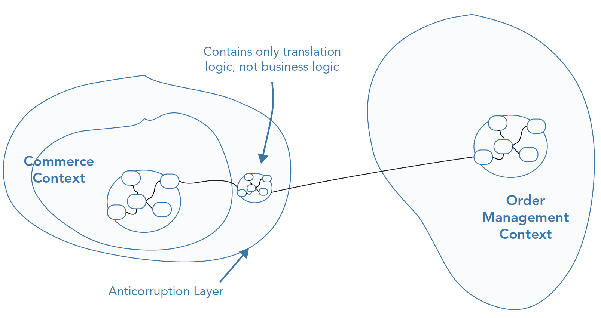
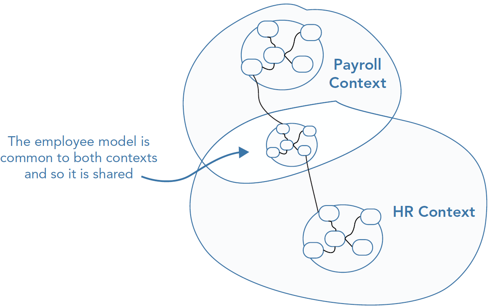
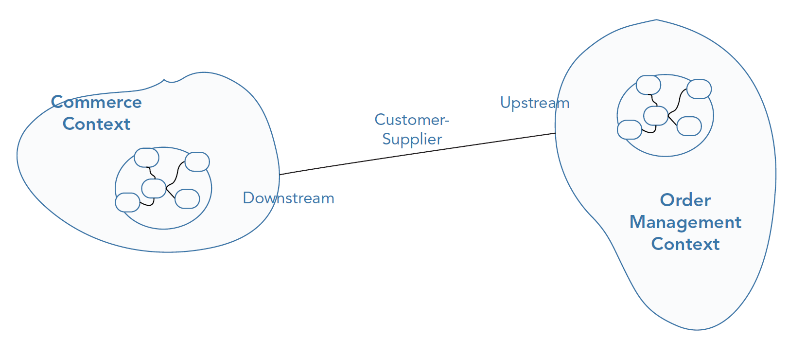
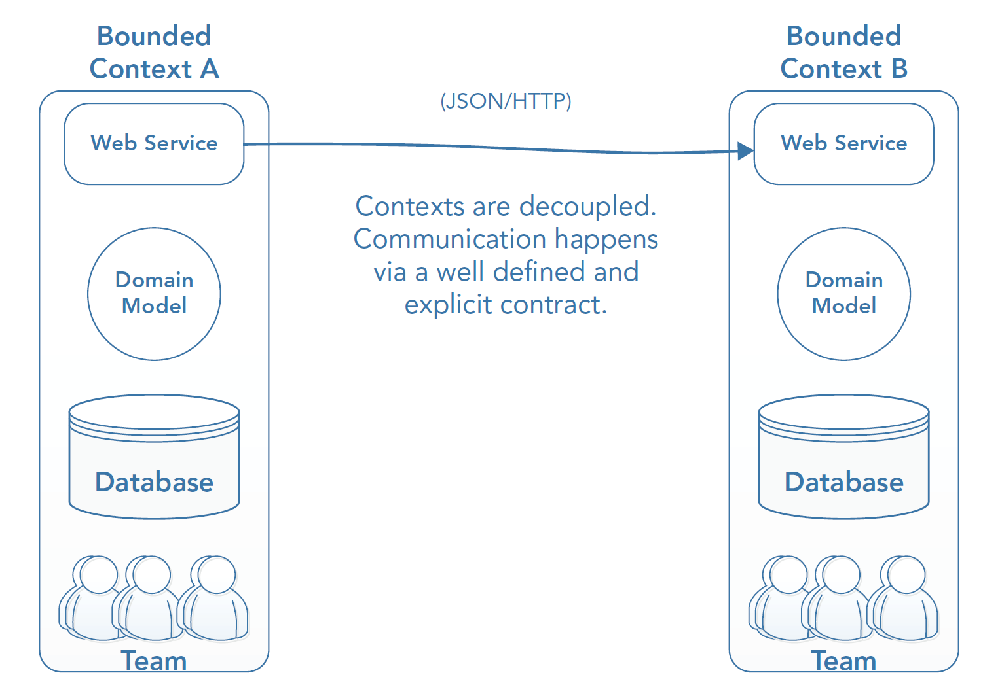
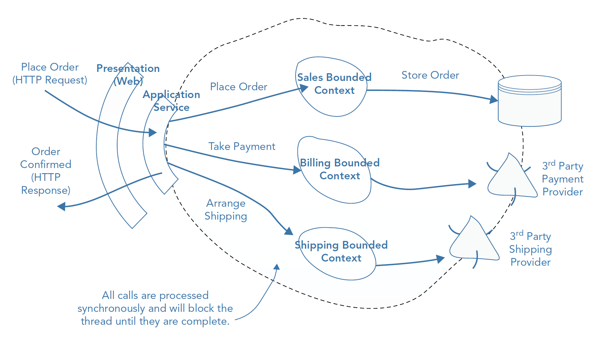

Alma Mater Studiorum - Università di Bologna
Computer Science and Engineering Department (DISI)
Domain-Driven Design
04 - Strategic Patterns
A. Croatti
Laboratory of Software Systems
A.Y. 2020/2021
Outline
-
Software Architectures for the DDD
-
Context Mapping
-
Bounded Context Integration
Software Architectures
for the Domain-Driven Design
Towards a
Clean Architecture
DDD does not enforce the use of a particular architectural style
… as long as the chosen one must support the isolation of the domain logic!
-
Several architectural styles can be used
- e.g. ubiquitous layered architecture, hexagonal architecture, …
-
The Microservice Architectural Style is the closest one to the DDD philosophy
A “revised” Layered Architecture
-
At the heart of the architecture there is the domain layer
-
Surrounding the domain layer there is an application layer
- It abstracts the low-level details of the domain behind a coarse-grained API
- The APIs represent the business use cases of the application
-
The domain logic and application layers are isolated and protected from the “external” accidental complexities
Dependency Inversion
-
The domain layer and application layers at the center of the architecture should not depend on any other layers
-
The application layer is dependent only on the domain layer
- it orchestrates the handling of the use cases by delegating to the domain layer
The Application Service Layer
-
Represents the use cases and behavior of the application
- use cases are implemented as application services that contain application logic to coordinate the fulfillment of a use case by delegating to the domain and infrastructural layers
-
Operates at a higher level of abstraction than the domain objects
- exposing a coarse-grained set of services while hiding the details of the domain layer ("what the system does, but not how it does it”)
- is a facade for the domain model
-
Enables the support of different clients without compromising the domain layer’s integrity
- clients must adapt to the application layer APIs, transforming the output in a suitable format
The Infrastructural Layer
-
Contains all the technical details of the software system
- such as enabling the application to be consumed, whether by humans via a user interface or by applications via a set of web service or message endpoints
- is responsible for the technical implementation of storing information on the state of domain objects
-
Can provide capabilities for logging, security, notification, and integration with other bounded contexts and applications
Clean Architecture
-
Unifies the layered Architecture and Hexagonal Architecture with best practices like the Dependency Inversion Principle and Use Cases
- It also aims for maximum independence of any frameworks or tools that might stay in the way of application’s testability or their replacement
-
Clean Architecture divides our system into 4 layers
-
Key concepts
- Any layer can only reference a layer below it and know nothing about what’s going on above.
- The use cases and entities are the heart of your application and should have a minimal set of external library dependencies.
Clean Architecture Layers
-
Entities - These are the business objects of your application. These should not be affected by any change external to them, and these should be the most stable code within your application.
-
Use Cases - Implement and encapsulate all of the business rules
-
Interface Adapters - Convert and present data to the use case and entity layers
-
Frameworks and Drivers - Contain any frameworks or tools you need to run your application

(from Clean Architecture by Robert C. Martin)
No “name” in an outer circle can be mentioned by an inner circle
Clean Architecture - Pros
| Pros | Description |
|---|---|
| Power | Your business logic is protected, and nothing from the outside can make it fail. Your code does not depend on any external framework “controlled” by someone else. |
| Flexibility | Any adapter can be replaced at anytime by any other implementation of your choice. |
| Defer decisions | What database do I need? What web framework do I need? You can build your business logic without knowing those details. |
| High maintainability | It’s easy to identify what component fails. |
| Implement faster | As the architecture separates concerns, you can concentrate on one task at a time and develop faster. This also should reduce the amount of technical debt. |
| Tests | Unit testing is easier as the dependencies are well-defined, it’s easy to mock or stub. |
| Integration tests | You can create a specific implementation of any external service you want to hit during your integration tests. |
Clean Architecture - Cons
| Cons | Description |
|---|---|
| Learning curve | At the beginning, the architecture can be overwhelming, especially for junior developers. |
| Too much code | More classes, more packages, more sub-projects, … |
| Complexity | The complexity of the project is higher. |
Microservices Architecture
-
Nowadays, an extremely popular architecture style
- … heavily inspired by DDD Bounded Context concept!
-
The goal is to have a high level of decoupling
- Microservices favor duplication over reuse

(from Fundamentals of Software Architecture
by R. Richards and N. Ford)
Microservices “Implications”
-
Componentization via Services - Being independently deployable is a key feature
-
Organized around Business Capabilities - Cross-functional teams are serving a specific business purpose
-
Products not Projects - The team is responsible for the whole lifecycle, including production and maintenance
-
Decentralized Governance - Local choices are more informed about local problems: so local implementation should have more freedom
-
Decentralized Data Management - Microservices should own their own persistence
-
Infrastructure Automation - Continuous delivery is a must
-
Design for Failure - Applications need to tolerate service failures, so part of the Microservice approach involves making sure failure doesn’t affect the user experience
-
Evolutionary Design - Parallel independent evolutions bring also the idea of smaller, possibly uncoordinated, releases. Components are independently replaceable and may have different lifespans.
Microservices and Bounded Contexts (1/3)
-
Each (micro)service models a domain/workflow
- Each service represents a bounded context…
- … or more than one!
-
Service Boundaries delineated according:
- Purpose - each microservice should be extremely functionally cohesive
- Transactions - each microservice must reduce issues related to transaction collaboration among domain entities
- Choreography - excellent domain isolation might generate overhead in communications
-
Data Isolation
- Avoid all kind of coupling, especially shared data schemas and databases (used as integration point)
Microservices and Bounded Contexts (2/3)
| Feature | Bounded Context | Microservice |
|---|---|---|
| Language consistency | Mandatory, by definition | Implicit and recommended |
| Organized around Business Capabilities | Implicit in the idea of UL shared between domain experts, stakeholders, developers, … | Cross-Functional Teams around a specific purpose. |
| Componentization via Services | Orthogonal | Key property |
| Products not projects | Orthogonal, recommended for deeper learning | Key feature |
| Decentralized Governance | A model fitting its purpose | Local choices win over enterprise standards |
Microservices and Bounded Contexts (3/3)
| Feature | Bounded Context | Microservice |
|---|---|---|
| Decentralized Data Management | Private persistence is fundamental for language consistency, and for safe evolution of the model | Private persistence per services |
| Infrastructure automation | DDD says nothing about it, but whatever is making the team feel safer and ready to experiment sound like a great idea. | It’s core to Microservices and getting progressively better supported by the available tools |
| Design for Failure | Orthogonal | Key feature |
| Evolutionary design | Good fit with DDD approach | Key feature |
Bounded Contexts are built around the
purpose of the model,
Microservices around the
deployment boundaries
For good architectures…
Be Pragmatic, Yet Visionary
-
Pragmatic - Dealing with things sensibly and realistically in a way that is based on practical rather than theoretical considerations
-
Visionary - Thinking about or planning the future with imagination or wisdom
Must-have books, for your career…
Context Mapping
Bounded Contexts Integration Challenges
-
In large and complex applications, multiple models collaborate to fulfill the requirements and behaviors of a system
- A single team may not own all of the various subcomponents of a system
- Existing legacy code is under the responsibility of a different team
- Other components may be provided by third parties (no knowledge of the clients that will consume its functionality)
-
Bounded Context integration can be compromised in case of lack of a good understanding of the different contexts within a system, and their relationships to one another
Context maps help to deal with such integration challenges!
- … ensuring that teams are informed of the holistic view of the system, both technical and organizational
- … enabling them to have the best possible chance of overcoming issues early
- … avoiding accidentally weakening the usefulness of the models by violating their integrity
Context Map
-
In DDD, context map is an important artifact
- its responsibility is to ensure that boundaries between various contexts of the system are defined explicitly and that each team understands the contact points between them
-
A context map is not a highly detailed document
- it is a high-level (hand-drawn) diagram that communicates a holistic picture of the contexts in play
Context Map - Technical Reality
-
Technical details of the map demonstrate the integration points between contexts
- are important to understand the technical implications changes
-
It shows the boundaries that exist and any translations that are used to retain the integrity of bounded contexts
-
Context maps reflect reality, showing the code in the present state rather than an ideal future state
Context Map - Organizational Reality
-
Changes to business processes/workflows can span many bounded contexts and reach across various parts of the domain
- It is vital to understand who is responsible for each context that is required to change and how this change will take place
-
Showing the direction of team relationships is a strength a context map has over traditional UML diagrams
- This knowledge is essential to resolving nontechnical challenges before they block progress
Hints for Context Map Creation
-
Focus on your immediate problem area
- the goal is to understand the landscape that will affect the success of your project and not the entire enterprise
-
Work with domain experts and label the core domain
- marking the core domain on the map and discovering the relationships between it and other contexts can provide insight into its clarity in context to the enterprise landscape
Relationships between bounded contexts
-
Models in context work together in large applications to provide system behavior.
- it is important to understand the relationships between the contexts to have a clear understanding of the whole system organization at the macro-level
-
There is a list of patterns describing common relationships between bounded contexts:
- Anticorruption Layer
- Shared Kernel
- Open Host Service
- Separate Ways
- Partnership
- Upstream/downstream Relationship
- Consumer/Supplier
- Conformist
NOTE: These patterns show how the models relate to each other and how teams relate, they are no technical integration patterns on communicating across contexts
#1
Anticorruption Layer
-
Wraps communication with legacy or third‐party code to protect the integrity of a bounded context
- manages the transformation of one context’s model to another
-
An isolation layer that contains an interface written in terms of the model
- the interface adapts and translates to the interface of the other context
- it is similar to the adapter pattern
#2
Shared Kernel
-
Used when two bounded contexts in the same subdomain share a subset of domain logic
- crossover in terms of domain concepts
-
A shared kernel can be riskier due to the tighter coupling that leads to one team being able to break another team’s system
- It’s important to have a continuous integrated test system to verify the behavior of both models when the common model is modified
#3
Open Host Service
-
Useful when other systems or components employ some type of transformation layer in order to translate your model into terms of their own
- e.g. using an anticorruption layer
-
It can be more useful to provide a set of services that exposes the functionality of a context via a clearly defined contract
#4
Separate Ways
-
If the cost of integration between contexts is too great due to technical complexities or political ones, a decision can be made to not integrate contexts at all and simply have teams implement separately from one another
-
Integration can instead be achieved via user interfaces (or manual processes)
#5
Partnership
-
If two teams are responsible for different contexts but are working toward a common goal a partnership can be formed to ensure that cooperation on integration between the two contexts can be made
-
If teams are using a shared kernel between two bounded contexts it is recommended that they do so as a partnership
#6
Upstream/Downstream Relationships
- The relationships between bounded contexts can be defined in terms of a direction
- one end will be upstream and the other downstream
- The downstream end of the relationship is dependent on data/behavior of the upstream end
- The upstream end will influence the downstream context
#6A
Customer/Supplier
-
The goal is to create an agreement on an interface that satisfies both contexts from a technical and scheduling standpoint
- The customer part of the relationship is the downstream context
-
The customer‐supplier relationship emphasizes that the customer team’s bounded context relies on the supplier team’s bounded context, but not vice versa
-
When there is no opportunity to form a collaborative relationship with an upstream context:
- the downstream context must conform to the upstream context’s integration points
#6B
Conformist
-
If an upstream context is not able to collaborate then the downstream context will need to conform to the upstream context when integrating
- The most common occurrence is integrating with external suppliers
-
If you are downstream and are unable to form a customer‐supplier relationship and it is too costly to create an anticorruption layer you should conform to the model of the provider to simplify integration
-
The most obvious downside to the conformist relationship is that the downstream team, which works to the requirements of the upstream team, may have to sacrifice clarity of its domain model because it must align to the model of the upstream context
-
Alternatively, an anticorruption layer can be used to retain the integrity so that changes to a contact point don’t affect the underlying model
Communicating the Context Map
-
It is best to add the type of organizational relationship and the type of technical integration that exists between two bounded contexts on the line that joins them
-
It is also desirable indicating which side of the line is upstream and which is downstream, if applicable
Strategic Importance of Context Maps
-
The communication between bounded contexts, both technical and organizational, is more important for teams starting out on a project than the bounded contexts themselves
- Information that context maps provide can enable teams to make important strategic decisions that improve the success of a project
-
Teams don’t need to understand the inner workings of each bounded context: they need to be aware of those other contexts (the application programming interface (API) they expose, the relationships they have, and, most importantly, the conceptual models they are responsible for…)
-
A context map is a powerful artifact that can bring new team members up to speed quickly
Bounded Context Integration
The Issue
After identifying the bounded contexts in your system the next step is to decide how you will integrate them to carry out full business use cases
-
Software services need to have relationships with each other to provide advanced behaviors
- relationships can reflect the domain and domain experts expectations
- relationships may impact the scalability of the (distributed) system
-
A good place where to start identifying relationships is by identifying your bounded contexts
Bounded Contexts
must be Autonomous
-
As systems grow, dependencies become more significant in a negative way
- You should strive to avoid most forms of coupling unless you have a very good reason…
-
A coupling on code means that one team can break another team’s code
- … or cause bottlenecks that slow down the delivery of new features!
-
A runtime coupling between subsystems means that one system cannot function without the other
Bunded Contexts Integration at the code level
(to be avoided)
-
Multiple Bounded Contexts within the same project
- Namespace/packages to enforce the separation
- SRP vs. DRY: which one to prefer?
-
Integration via a Shared Database
- Distinct domain concepts mapped to the same database concept with multiple attributes
-
Multiple teams working in a single codebase
- Git Workflow is not a cure-all
-
…
“Physical” Boundaries
Integration with Legacy Systems
-
Bubble Context
- An ad-hoc ACL mediates the communication among the bubble context and the legacy system
-
Autonomous Bubble Context
- The ACL acts as a synchronization barrier, the interaction with the legacy system(s) is asynchronous
-
Exposing Legacy Systems as Services
- aka Open Host Service Pattern
Integration Strategies
for Distributed Bounded Contexts
When bounded contexts are separate services that communicate with each other over the network we have a distributed system.
In these systems, choosing the wrong integration strategy might cause slow or unreliable systems that lead to negative business impacts!
-
Bad Practices
- Database and/or Flat File Integration
- Remote Procedure Call (RPC)
-
Good Practices
- Messaging
- REST
The (old) RPC Scenario
Event-Driven Reactive DDD

Service-Oriented Architectures & Reactive DDD
Reactive programming is a set of low‐level technical guidelines that lead to loosely-coupled software components
SOA is a high‐level concept that facilitates loosely coupled business capabilities
The combination of the two appears an optimal direction for the DDD approach!
SOA & Reactive DDD
-
How to combine these benefits with DDD?
- View your bounded contexts as SOA services, so that you can map high‐level bounded contexts onto low‐level, event‐driven software components
-
Combining SOA and reactive programming provides a platform to:
- align your infrastructure with business priorities
- deal with scalability and reliability challenges
- organize your teams by aligning them with bounded contexts to reduce communication overhead
Domain-Driven Design & REST
-
Resources - fit well with DDD because domain concepts can be expressed as resources, further spreading the UL
- E.g. In a financial domain, transactions that transfer funds from one account to another
- The UL has an entry for each type of transaction, such as B2B Transaction or Personal Transaction, that become resources accessible from proper URIs
http://mydomain.com/B2bTransactionshttp://mydomain.com/PersonalTransactions
- The UL has an entry for each type of transaction, such as B2B Transaction or Personal Transaction, that become resources accessible from proper URIs
- E.g. In a financial domain, transactions that transfer funds from one account to another
-
Hypermedia - an opportunity for DDD to express the domain concepts more explicitly
- E.g. In a car insurance policy, each step of the application process could be expressed as links in hypermedia to the next possible steps, according with the UL terminology
- It can be used to model also workflows or domain processes
Bounded Context Integration via REST
-
Be careful! - A direct exposition of the domain model via RESTful API might be brittle!
- Each change in the domain model is directly reflected in the system interface
-
A viable solution
- introduce a separate Bounded Context for the system’s interface layer and use appropriate strategies to access the actual Core Domain from the system’s interface model
- so, the Core Domain is decoupled from the system’s interface model
- the interface model must be driven by the use cases
-
A step further
- CQRS - Command Query Responsibility Segregation